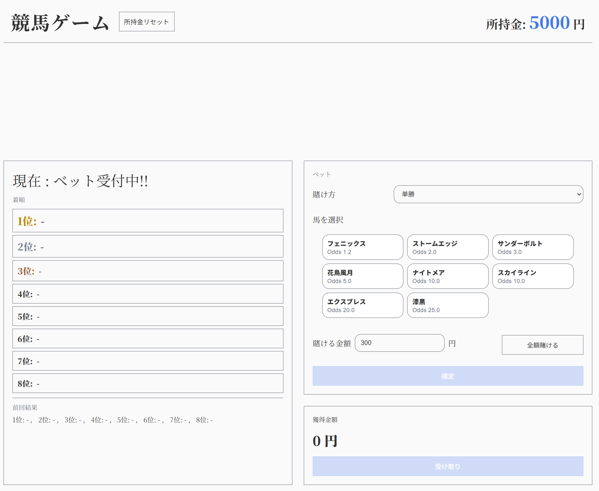
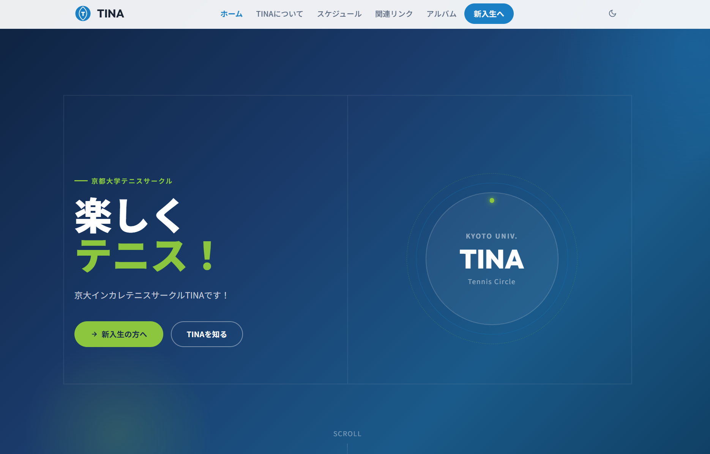

自己紹介
エンジニア志望の学生です。 関西の大学でコンピュータサイエンスを学んでおり、特にネットワーク関係の研究をしています。 これまでに、大学の計算機実験でデータベースを活用するWebアプリケーションの開発や、 個人的にJavaScriptやReactを用いたWeb開発に取り組んできました。 今後は、ネットワークアーキテクチャの設計・最適化に携わることで、 より高速で安定した通信基盤の実現に貢献していきたいと考えています。
スキル
言語
HTML & CSS
・Webサイトのフロントエンド開発
TypeScript
・Webアプリケーション開発
Java
・Webアプリケーションのバックエンド開発
Python
・画像認識プログラムの実装
C++
・競技プログラミング
PostgreSQL
・正規形RDB設計, クエリ最適化
フレームワーク・ツール
React
・コンポーネント設計
GitHub & VS Code
・開発, コード管理
活動経歴
-
2023.04
大学入学
コンピュータサイエンスを専攻。ネットワーク・データベース・アルゴリズムなどを学習中。
-
2026.03
個人開発開始 (Web)
JavaScript / React / TypeScript を独学し、Webアプリケーションの個人開発を開始。
-
2027.04
大学院進学予定
ネットワーク・セキュリティ分野の研究に取り組むため、大学院進学を予定。
制作物一覧


サークルのWebサイト
所属するテニスサークルの新歓向けWebサイトを全面的に改修しました。 Basic認証によるページ制限や、新入生が見やすいレイアウト設計など、 実用的な要件を意識した実装に取り組みました。

待機画面アプリ
React × TypeScript × Vite で制作した待機画面アプリです。 時計・タイマー表示に機能を絞り、 情報の取捨選択を意識したミニマルなUIを設計しました。
今後やりたいこと
- Next.js を用いたフルスタック開発に取り組み、 フロントエンドからバックエンドまで一貫して設計・実装できる力をつけたい
- 大学院でのネットワークアーキテクチャ研究を通じて通信レイヤーへの理解を深め、 インフラとアプリケーションを横断的に捉えられるエンジニアを目指したい
- それらを踏まえて、セキュリティを意識した堅牢なWebアプリケーションの開発にも挑戦していきたい